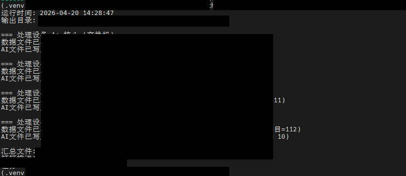
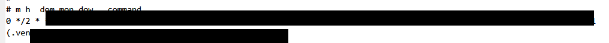

部署上线阶段
Linux 部署与定时任务
目标
把本地已打通的完整脚本部署到 Ubuntu 服务器，使项目从开发调试阶段进入可持续运行阶段。
1. 部署目录与环境准备
项目部署到 Linux 服务器指定目录，在服务器中重新创建虚拟环境并安装依赖，保证与本地调试环境一致。
sudo apt update
sudo apt install -y python3 python3-pip python3.10-venv
cd /path/to/zbx-ai-bot
python3 -m venv .venv
source .venv/bin/activate
python -m pip install --upgrade pip
python -m pip install requests python-dotenv2. 手工运行验证
先不直接上定时任务，而是手工执行一遍主脚本，确认 Linux 端也能顺利完成取数、分析、文件写入和钉钉推送。
python /path/to/zbx-ai-bot/zabbix_step4_full_pipeline.pyLinux 运行截图包含设备名称、输出文件名和接口返回标识，公开页面使用脱敏截图保留手工执行验证结论。

3. 定时任务接入
手工验证通过后，再把主脚本接入 crontab，让它按照固定周期自动执行，并把输出追加到日志文件中，便于后续查看运行历史。
0 */2 * * * /path/to/zbx-ai-bot/.venv/bin/python /path/to/zbx-ai-bot/zabbix_step4_full_pipeline.py >> /path/to/zbx-ai-bot/app.log 2>> /path/to/zbx-ai-bot/error.log定时任务截图包含部署路径和日志输出路径，公开页面使用脱敏截图保留 crontab 接入成功的说明。

4. 阶段成果
完成这一阶段后，项目不再依赖人工手动运行，而是具备了 Linux 服务器持续执行的能力。结合日志文件、输出目录和钉钉推送结果，这个项目已经具备可演示、可持续运维的基础形态。
本阶段成果
项目已从本地开发阶段进入服务器持续运行阶段，具备 Linux 部署、日志输出和 crontab 自动执行能力。